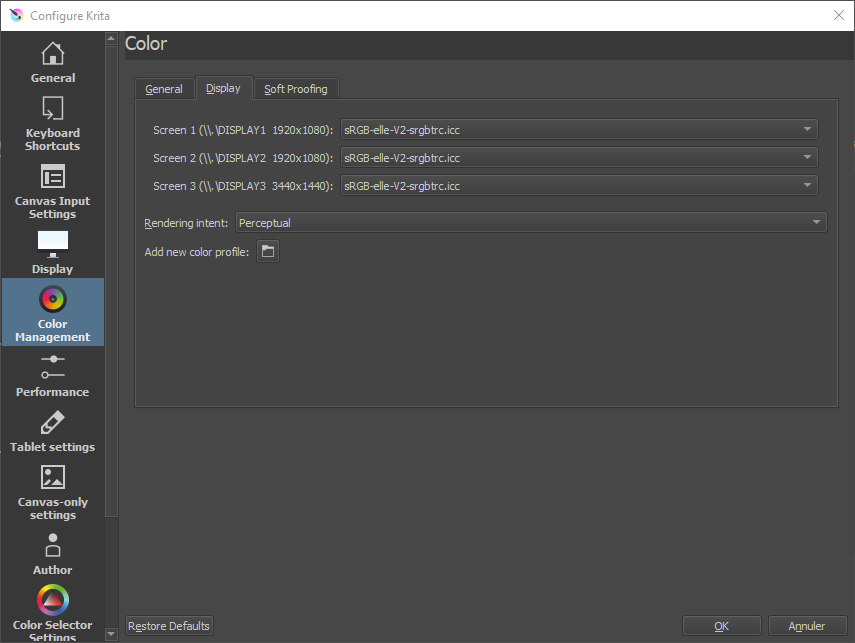
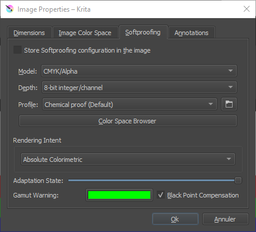

II.N - Gestion des couleurs : Krita¶
Krita est très complet dans la gestion des couleurs, et utilise notamment OCIO*.
Il a comme unique défaut le fait qu’on ne puisse pas spécifier l’espace colorimétrique des images qu’on importe individuellement. Cela peut poser un problème notamment lorsqu’on importe des fichiers openEXR* qui ne viennent pas d’une application partageant la même configuration OCIO* ou si l’on mélange des fichiers utilisant différent espaces colorimétriques.
La documentation de Krita inclue des explications intéressantes et détaillées sur les couleurs et la gestion des couleurs (en anglais).
N.1 - Espace de travail¶
L’espace de travail se définit lors de la création d’un document Krita.

On peut choisir l’espace parmi la liste dans l’ongler Color.
- Model permet de choisir le format dans lequel les couleurs seront enregistrées dans le document. On reste en général sur RGB/Alpha si on travaille en vidéo, ou éventuellement CMYK/Alpha en cas de document destiné à l’impression.
- Depth définit la profondeur des couleurs. On choisira en général 16-bit float/channel en travaillant pour de la vidéo ou animation.
- Profile permet de sélectionner l’espace de travail, souvent scRGB (Linear) ou ACEScg pour la vidéo.
Le bouton Color Space Browser ouvre une boîte de dialogue plus complète décrivant les différents espaces colorimétriques disponibles et facilitant le choix.

On peut aussi parcourir les fichiers pour choisir un espace au format ICC.
Il est possible de modifier le profil utilisé par défaut dans les nouveaux documents via les préférences de Krita.

On peut aussi y régler quelques autres options.
Pour changer l’espace de travail d’un document déjà ouvert, on passe par le menu Image puis Propriétés.

On y retrouve les mêmes réglages que lors de la création du document.
N.2 - Affichage¶
N.2.a - Écran¶
On peut spécifier l’espace colorimétrique de l’affichage pour chaque écran branché à l’ordinateur, dans les préférences de Krita. En général, on laisse en sRGB sauf dans le cas ou l’écran utiliserait un espace différent.

N.2.b - Épreuvage (soft-proofing)¶
Il est possible, dans le troisième onglet des préférences, de configurer la simulation de l’affichage en fonction de l’espace de sortie finale, ce qui est particulièrement intéressant dans Krita en cas de travail pour l’impression.

La couleur sélectionnable dans Gamut Warning est celle utilisée pour afficher des alertes montrant les zones de l’image en dehors du gamut* de sortie, et qui donc seront changées lors de la sortie.
Une fois l’épreuvage configuré, on peut l’activer et le désactivier pour l’affichage des documents via le menu View (Affichage) ou avec le raccourci clavier [CTRL] + [Y]. Krita peut aussi afficher une alerte sur les zones de l’image dont les couleurs sont en dehors du gamut de sortie, aussi via le menu View (Affichage) ou bien avec le raccourci clavier [CTRL] + [SHIFT] + [Y].
On peut aussi définir ces paramètres d’épreuvage uniquement pour le document ouvert, via le menu Image puis Propriétés.

N.3 - Sélecteur de Couleurs¶
Krita permet de régler l’espace d’affichage des sélecteurs de couleur, ce qui est bien pratique. On retrouve le réglage dans un onglet des préférences.

En général, on cochera la case permettant de choisir un espace spécifique pour le sélecteur de couleur (notamment un espace non-linéaire, comme le simple sRGB utilisé par les écrans).
Dans le cas d’un travail en 16 ou 32 bpc flottant et un espace linéaire, les types de sélecteurs différents de HSV (teinte, saturation, valeur) - c’est à dire HSL, HSI et HSY - peuvent ne pas fonctionner correctement (car ils doivent avoir un blanc maximum qui n’existe plus en linéaire).
N.4 - Sortie¶
Lors de l’enregistrement des fichiers, Krita affiche une boite de dialogue avec les options adaptées. En cas d’enregistrement au format natif .kra ou openEXR*, c’est l’espace de travail qui est utilisé ; sinon Krita fera une conversion vers l’espace standard du fichier enregistré.

Exemple pour une sortie PNG et sa conversion en sRGB, ou optionnellement en Rec.2020.
N.5 - OCIO dans Krita¶
Krita utilise OCIO qui se configure simplement via le Docker (panneau) appelé LUT Management (Gestion des LUT).

Un exemple avec la configuration OCIO Filmic de Blender